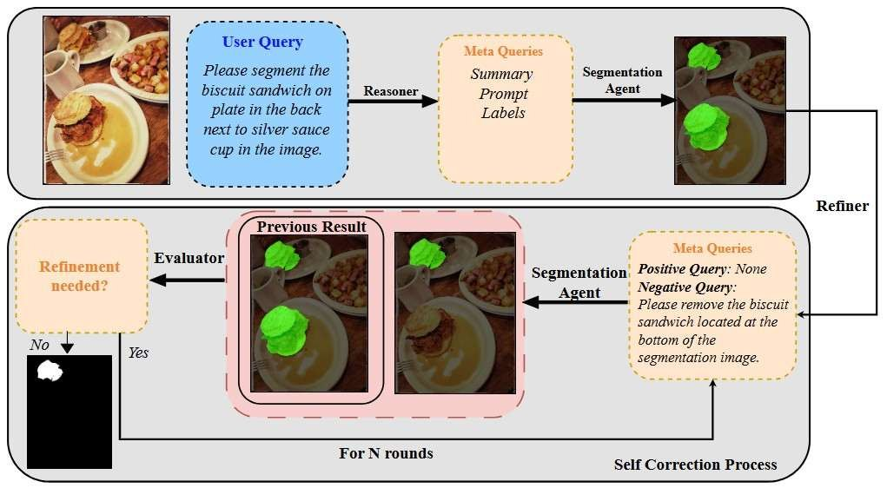
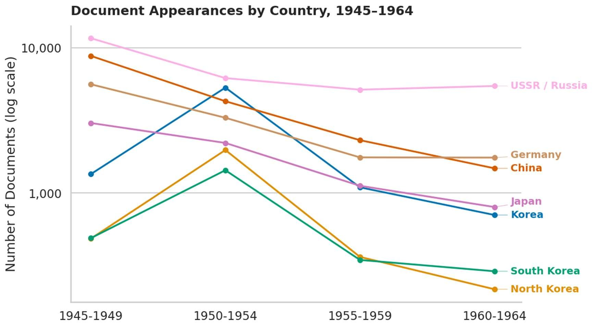
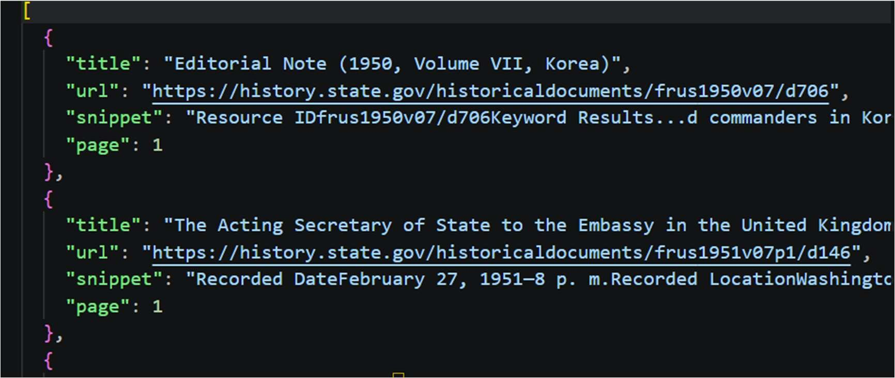
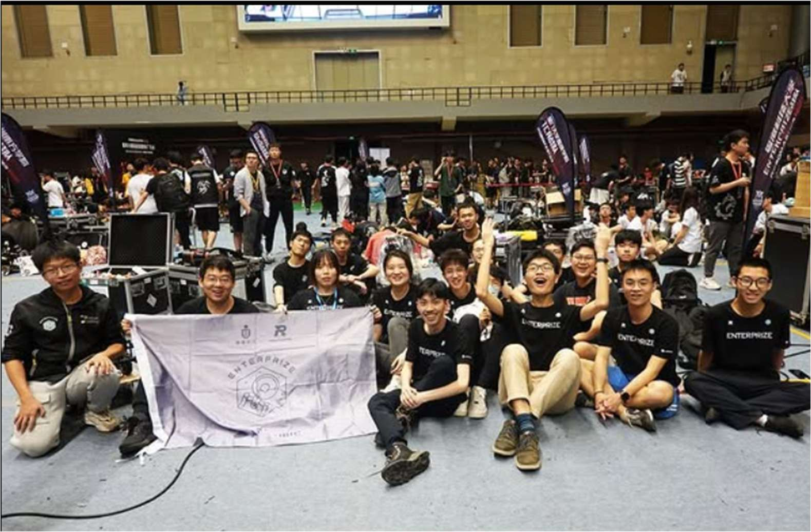
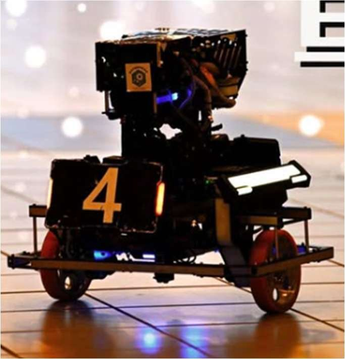
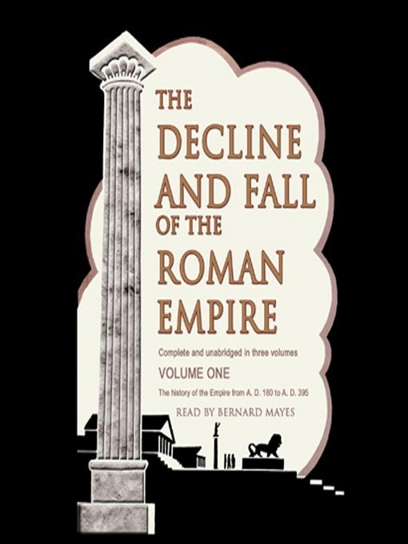
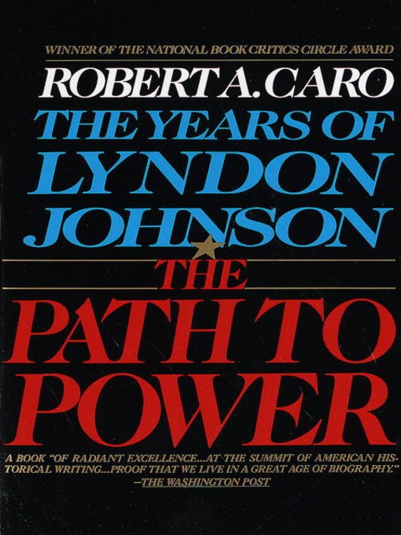
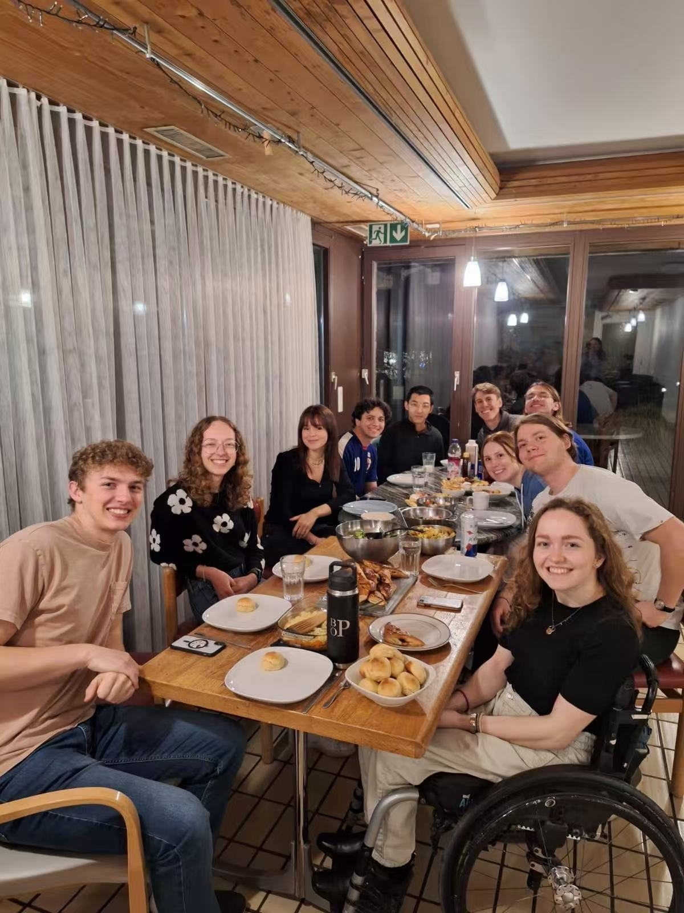
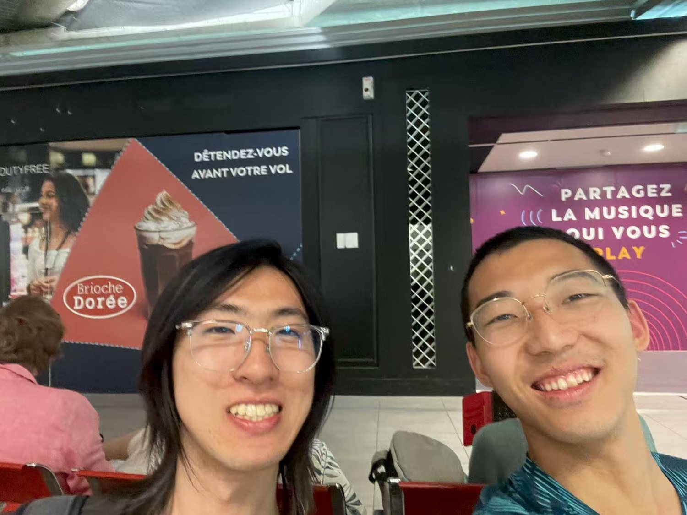

MLLM research
CoT-Seg
Co-first author of ICLR2026 workshop paper. Uses CoT prompting, self-recursive improvement, and RAG for out-of-domain knowledge to improve segmentation accuracy for complex queries.

MLLM research
Co-first author of ICLR2026 workshop paper. Uses CoT prompting, self-recursive improvement, and RAG for out-of-domain knowledge to improve segmentation accuracy for complex queries.
Search tool and analysis
A searcher for the State Department's Foreign Relations of the United States archive. It returns each match with its title, link, snippet and page, and I used the results to chart how often each country appears in documents from 1945 to 1964 and to reflect how US foreign policy activity priorities shifted through these years. Demonstrates the convenience of automating database searches in research.


Testing pipeline
A Python pipeline that combines symbolic testing and fuzzing to run SQL queries automatically and surface database errors. It runs in Docker, and the same approach applies to data quality checks on production pipelines.


Undergraduate robotics team
Programmed embedded software for hero robot, developed core repository interface code ,interboard communication, IMU calculations, communication with the referee system, CV target tracking,user ui design for competition robots(Hero and launcher) as part of a cross-functional mechanical/hardware/embedded team.
As team leader, I analyzed Hong Kong's housing market and presented public housing and rent-control recommendations to the judges.
Software engineer on a team building a CLIP-based diffusion model for video generation.
UW Specialty Masters Club, Foster School of Business
DreamAI, startup
Braillic, startup
HKUST RoboMaster team
Three of my most favorite English books.
Isaac Asimov
Isaac Asimov is the best sci-fi writer of all time.

Edward Gibbon
While not completely historically accurate, it is one of the reasons I think of Rome twice a day.

Robert A. Caro
An exemplary history book that dives deep and wide in its narrative. This is the kind of history book I like to read.
Everything else on my shelf, grouped by subject. Open a subject to see its books.
I enjoy going out with friends(sports especially), reading books, playing chess and board games.
Basketball is my main game. I also play badminton, tennis and soccer casually, mostly whenever friends are up for a match.
Sci-fi, history, Chinese poetry and novels. My three favorite english ones are on the favorite readings section.

